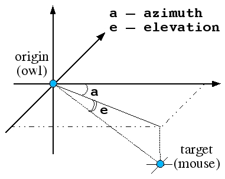
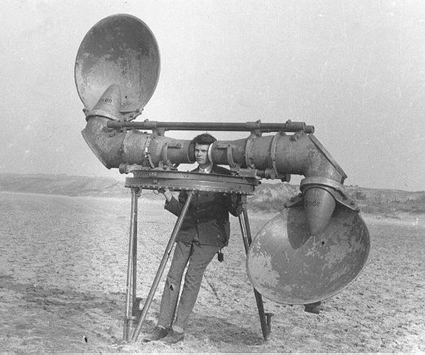
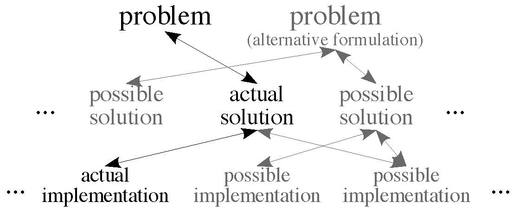

Unit 3: THE methodology

open your eyes!
[from
Unit 1] What would a real explanation look like?
-
It would have to be intelligently reductionist, by showing how
complexity arises from simpler interacting elements.
-
It would have to be literal (as opposed to metaphorical) at its core.
What would we like to explain/understand?
"Social psychology has the best questions; cognitive psychology
has the best answers."
the Marr & Poggio program
On the agenda today:
the Marr & Poggio program for understanding cognitive/computational
systems (including brains).
A typical question of potential interest about behavior:
|
Why did the chicken cross the road?
|

|
why did the chicken cross the road?
why did the chicken cross the road?
Source of explanation:
(1) common sense; (2) common sense; (3) mock sociology; (4) mock
cognitive psychology; (5) psychoanalysis (= mock clinical psychology); (6) developmental neuropsychology; (7)
neurophysiology; (8) psychopharmacology.
"MY BRAIN MADE ME DO IT"
For sure, but WHY? And HOW?
(Repeat until all is fully understood.)
a key methodological observation: there are multiple levels of analysis/understanding
Just like chicken-crossing, any instance of applied computation — which is
what cognition is — can MUST be
examined on a number of LEVELS.
- Ernst Mayr's two types of causes/explanations —
- proximate causes — immediate, mechanical influences on a trait.
- ultimate causes — historical explanations of why an organism has one
trait rather than another, often in terms of natural selection.
[E. Mayr (1961). Cause and effect in biology. Science 134:1501]
- Niko Tinbergen’s four questions —
- survival value — What is it for?
- ontogeny — How did it develop during the lifetime of the individual?
- evolution — How did it evolve over the history of the species?
- causation — How does it work?
[N. Tinbergen (1963). On aims and methods in ethology. Z. Tierpsychol. 20:410]
- David Marr’s three levels of understanding —
- what problem does the system solve?
- what representations and algorithms does it employ?
- how are these implemented?
[D. Marr (1982). Vision. WH Freeman, San Francisco, CA.]
the (Mayr & Tinbergen &) Marr & Poggio levels of analysis/understanding
- Understanding the behavioral and evolutionary context and needs, shedding
light on computational problems that may need to be solved.
What does the animal do in general (to survive and procreate)?
In the present context? What are the effects of evolutionary pressures
on its behavior? What are its evolutionary roots?
- Understanding the computational problem, leading to a theory.
What could be the goal of the computation? What is the goal of the
computation, why is it appropriate, and what
is the logic behind the strategy by which it can be carried out?
- Understanding/developing representations and algorithms that solve the problem.
What could be the input and output representations and
the algorithm for mapping inputs to outputs? What are the
representations and algorithms in the given system?
- Understanding/developing the mechanism that implements the algorithm.
How could a given representation and algorithm be
realized physically? How are they realized in a given system?
exemplary full understanding: sound localization in the barn owl
The barn owl, Tyto alba
the barn owl: hunting behavior
Tracking owls with GPS (Massa et al., 2015). Left: activity
by time of day night. Right: preferred terrain type.
the hunting owl
In the wild, the barn owl finds and catches mice in total darkness,
presumably by homing in on the sound of their movement.
barn owl — posing the computational challenge

Level 1 (the computational problem):
what is it that needs to be done for the hunting behavior to succeed?
— find target coordinates (azimuth, elevation)
Can you think of any alternative formulations of the problem?
barn owl — a classical experimental setup for behavioral
study of sound localization
To address Levels 2 (representation and algorithm) and 3
(mechanism), controlled
experimentation is required.
The diagram on the right illustrates the behavioral testing setup.
the barn owl: a recent behavioral study of sound+vision
localization IN THE LAB
Studying owl auditory-visual cue integration in the lab (Hazan
et al., 2015).
(
A) The dark spots on the arena designate possible
positions of four food items. Items were spread so that each
quadrant will contain one item. The gray spot on the arena
designates a possible location of the loudspeaker. (
B) An
owl with the OwlCam attached to its head. (
C) A close view
of the OwlCam with the attachment unit and the battery in
place. The scale bar designates 10mm.
the barn owl: a recent behavioral study of sound+vision
localization IN THE LAB

Studying owl auditory-visual cue integration in the lab (Hazan
et al., 2015).
Note how bad auditory orienting (left) is, compared to
visual (right).
barn owl — classic experimental setup for behavioral study of sound localization
To address Levels 2 (representation and algorithm) and 3
(mechanism), controlled
experimentation is required.
Conducting the experiment in darkness approximates better (but not
perfectly) the natural hunting conditions IN THE WILD.
barn owl — localization performance
Here's how they found that the owl uses binaural hearing.
barn owl — from problem to algorithm

How could binaural audio information be used to localize sound source?
Note that this question straddles computation and
algorithm levels.
Remember that a particular system such as the barn owl may or may not use
a particular algorithm.

barn owl — from problem to algorithm

How could binaural audio information be used to localize sound source?
-
by noting intensity difference between the two ears;
-
by noting timing difference between the two ears.
The barn owl uses both.
How?
barn owl — algorithm, implementation (focusing on time difference)

A possible way of computing time difference (Jeffress, 1948) using:
-
a coincidence detector
and
-
a calibrated time delay
line
(in air, a distance of 1
cm = 30
µs time delay).

barn owl — implementation

An elaboration of the coincidence + calibrated delay model by Masakazu Konishi —
The key idea:
convert time delay information into a place code.
Does the barn owl use this method? Yes!
barn owl — neural circuitry; Jeffress/Konishi model supported
|
|

|
|
anatomy: axons carrying information from the two
ears enter the nucleus laminaris from opposite sides,
and run parallel to each other.
|
physiology: neurons at the top of nucleus
laminaris show response time LEAD to the ipsilateral ear,
changing to LAG as the recording electrode descends into NL.
|
the Jeffress model: 50 years later

(A) The original Jeffress (1948) delay line +
coincidence model.
(B) Delay line configuration of a bushy cell
axon (red) from the contralateral AVCN (Anterior Ventral Cochlear Nucleus) projecting
to the MSO (Medial Superior Olive; black).
(C) Jeffress model, current view. Monaural channels feed into a binaural
processor: a bank of cross-correlators
that tap the signal at a different
ITD. Cells for which the delay exactly
offsets the ITD are maximally active.
An update on the algorithmic level:
B. J. Fischer and J. L. Peña (2011). Owl's behavior and neural representation predicted by Bayesian inference.
Nature Neuroscience 14:1061-1067.
Probabilistic/Bayesian computation will be discussed in unit 5.
another update: comparing sound localization in the barn owl and the ferret
"Spatial hearing in birds and mammals is more alike than previously
thought in its patterns of developmental plasticity, physiological
responses, and the computations employed to interpret binaural cues and map
the environment" (Shamma, 2015).
summary of the barn owl case study — integrated understanding
The multiple levels of analysis, applied to sound
localization by the owl:
-
The evolutionary and behavioral context:
In the ecological niche they reside in, owls employ passive sound
localization to pinpoint prey, by using interaural time (and
intensity) differences.
-
The computational problem:
given timing (and intensity) differences measured at two locations,
pinpoint the source of the sound.
-
Representation and algorithm:
use coincidence detection and delay lines to transform time difference
into a place code in the brain.
-
The mechanism:
arrange the neurons and wire them up via delay lines to reflect the algorithmic
solution.
The bottom line: a complete understanding of the system in question.
levels of understanding and multiple realizability of computation
